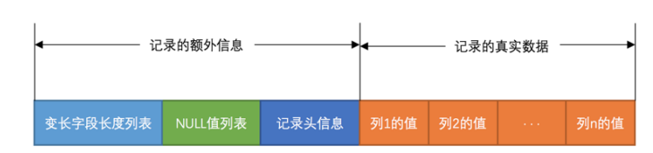
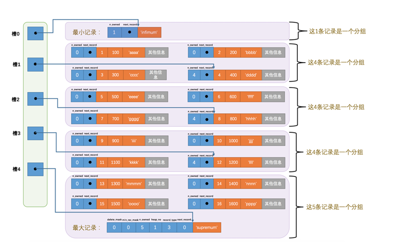
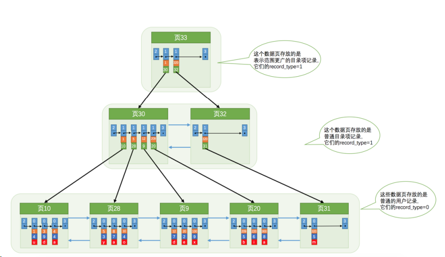

组会技术报告
存储结构，索引，查询成本
第 2 页 · 存储引擎
今天所讲的数据库系统原理基于 InnoDB 存储引擎。它是经典的关系型数据库存储引擎，也是目前使用最广泛的一种。
以上为可核实的产品史。
MySQL 是客户端 / 服务器架构。Server 层负责连接、解析 SQL、生成执行计划；真正读写记录的是存储引擎。
InnoDB 向上提供统一 API（读第一条 / 下一条、插入、加锁等），向下把数据放到磁盘页上，并提供：
关系一句话：换引擎可以换物理结构；解析与优化仍在 Server 层。本讲只沿着 InnoDB 这条路径往下走。
第 3 页 · 整体架构
SQL 层负责解析与优化；真正读写页、索引、事务和日志的是 InnoDB。换引擎可以换物理结构，本讲只沿着 InnoDB 这条路径往下走。
第一部分
先看 Compact 行格式：变长长度、NULL 位图、记录头，以及隐藏列。
第 5 页 · Compact 行格式
InnoDB 平时按记录读写，落盘时先按行格式编码。Compact 把一行拆成两段：左额外信息、右真实数据。额外信息共三块——变长字段长度列表、NULL 值列表、记录头。本页把前两块讲清楚。

从左到右：变长长度列表 → NULL 值列表 → 记录头（5 字节）→ 各列真实数据。
第 6 页 · 实例
row_id 6B、trx_id 6B、roll_pointer 7B。读图：蓝变长 绿NULL 深蓝记录头 橙真实数据；色块宽度按字节数比例。
第一部分（续）
页是 16KB 的盒子。记录按行格式放进 User Records，再用链表和页目录来找。
第 8 页 · 页内布局
默认 16KB。File Header 与 File Trailer 是各类页通用的；中间五段是数据页专有的。
FIL_PAGE_INDEX）、前后页号把数据页串成双向链表，还有校验和。第 9 页 · 插入过程
生成时没有 User Records。File Header、Page Header、Infimum + Supremum、Page Directory、File Trailer 已经就位，中间几乎全是 Free Space。
从 Free Space 申请一块与该行同样大小的空间，划进 User Records。记录在页里紧挨着放，没有空隙。
Free Space 被 User Records 吃光，这一页用完。再插入就要申请新页。页目录也会随记录增多，从尾部往上长。
第 10 页 · 记录头与伪记录
以表 page_demo(c1 INT 主键, c2 INT, c3 VARCHAR) 为例：Compact 行的记录头固定 5 字节（40 bit）。为方便看头信息，图里只画出头字段和 c1、c2、c3；隐藏列仍在，只是省略。
数字是 bit 数。另：delete_mask=1 表示已删但仍占页；min_rec_mask 标 B+ 树非叶层最小目录项，用户行一般为 0。
| 字段 | bit | 含义 |
|---|---|---|
| 预留位 1、2 | 1+1 | 未使用 |
| delete_mask | 1 | 0 未删 / 1 已删。不立刻腾空间，进垃圾链表，之后可覆盖复用 |
| min_rec_mask | 1 | B+ 树每层非叶节点里最小的那条目录项才标 1；用户行一般为 0 |
| n_owned | 4 | 本组有几条。只有「组里最后一条」才非 0，讲槽时再用 |
| heap_no | 13 | 本页记录堆位置。用户插入的行从 2、3、4… 往上排 |
| record_type | 3 | 0 普通；1 B+ 树非叶目录项；2 最小；3 最大 |
| next_record | 16 | 到「主键下一条」真实数据的相对偏移，下一页展开 |
InnoDB 给每个数据页自动加两条伪记录（虚拟记录），不经过 INSERT，也不放在 User Records。
infimum\0
supremum
第 11 页 · 页内单链表
next_record 存的是：从本条真实数据起点到下一条真实数据起点的相对偏移。例如第一条的值为 32，就表示再往后 32 字节就是下一条真实数据。
INSERT (1)(2)(3)(4) 之后。Infimum 的下一条 = 本页主键最小的用户记录；主键最大的用户记录的下一条 = Supremum；最大记录没有下一条。
delete_mask 置 1；next_record 改为 0。n_owned 从 5 变成 4（本组少了一条活记录）。next_record 另串成垃圾链表，空间可重用。再 INSERT 主键 2 时，会直接覆盖原坑，不再向 Free Space 要新空间。第 12 页 · 页目录与槽

再插入 12 行后共 18 条（含最小、最大），分成 5 组。每个槽指向该组最后一条（组内主键最大）的页内偏移，每个槽 2 字节，靠页尾存放。
n_owned = 组内条数；组里其他行的 n_owned 为 0。next_record 扫到 6。一组最多 8 条，扫得起。第二部分
目录项也是记录，也放进 16KB 的页。多级目录就是 InnoDB 的 B+ 树。
第 14 页 · B+ 树存储结构
以表 index_demo(c1 INT 主键, c2 INT, c3 CHAR(1)) 为例。页号可以不连续（10 之后是 28）。每个节点都是同样的数据页（类型 FIL_PAGE_INDEX），都能用页目录二分。

蓝块 2 / 3 是每页的 Infimum、Supremum。红块是主键 c1，灰块是 c2，橙块是 c3。叶页之间的蓝箭头是双向链表。
record_type = 1。record_type = 0。页内主键单链表，页间主键双向链表；下一页主键必大于上一页。[1, 320) → 页 30，≥ 320 → 页 32。根页号写入数据字典后不再移动。粗算：叶页约 100 条、内节点约 1000 条目录。三层大约 108 行，四层已远超常见表。主键查找最多走几个页，每页再二分。
第 15 页 · 聚簇索引
上一页那棵树，两个特点同时成立时，就叫聚簇索引。InnoDB 自动维护，不必写 INDEX。一张表一棵：索引即数据。
所有列 + 隐藏列（trx_id、roll_pointer；没有主键时还有 row_id）。在叶子页用主键就能直接取出整行，不用回表。
NOT NULL 的 UNIQUE 列。row_id，按它排序。主键最好稳定、尽量顺序插入。乱序主键会让叶子页频繁分裂，页在磁盘上更碎。
MyISAM 数据文件按插入序另存，索引叶子是「键 + 行号 / 偏移」，查完还要按地址取行。InnoDB 的聚簇索引叶子就是行本身。
第 16 页 · 二级索引
聚簇索引按主键排，WHERE c2 = 4 不能走那棵树的目录。于是为 c2 再建一棵 B+ 树，称为二级索引（辅助索引）。
c2 + 主键 c1。每建一棵树若再拷整行，太占空间。一张表可以有多棵二级索引。每插、删、改一行，聚簇和所有二级树都要维护排序，所以索引不是越多越好。
第 17 页 · 联合索引
也可以为 c2、c3 一起建索引。本质仍是二级索引，但排序规则是两列，不是两棵树。
因此：
c2 + c3 + 页号（同样必要时带主键，保证同层唯一）。c2 + c3 + 主键 c1，没有其他列。例如 idx_name_birthday_phone_number(name, birthday, phone_number)：先 name，再 birthday，再电话。叶子也不存 country。
| 联合索引 (c2, c3) | 分别建 idx(c2)、idx(c3) | |
|---|---|---|
| B+ 树数量 | 1 棵 | 2 棵 |
| 排序 | 先 c2，相同再 c3 | 各按自己那一列 |
| WHERE c2 = ? | 能用（最左列） | 走 idx(c2) |
| WHERE 只有 c3 | 用不上这棵树 | 走 idx(c3) |
| WHERE c2 且 c3 | 一棵树走到底 | 两棵树或回表后再滤 |
最左前缀：条件要从最左列连续用起。左边等值时，右边才可以范围。跳过中间列，右边用不上。WHERE 里写列的顺序无关，优化器会按索引列序重排。
第 18 页 · 回表
用非主键索引查完整行，必须用 2 棵 B+ 树。第二棵就是聚簇索引，这个过程叫回表。
SELECT *。只要多要一列不在索引里，就要回表。LIMIT 能截断回表次数，优化器更愿意选「二级索引 + 少量回表」。第三部分
执行前先给每条访问路径算成本：读页是 I/O，检行是 CPU。谁便宜，就留下谁。
第 20 页 · 基于代价的优化器
真正执行前，优化器枚举方案、算出各自成本，留下最低的作为执行计划。一条查询的成本只由两块组成。
mysql.engine_cost 一类表里，可以改，讲义按默认。= IN > < BETWEEN LIKE 前缀 等连上，才能形成范围区间。把聚簇索引叶子几乎读完，每行都拿去对条件。需要两份统计：SHOW TABLE STATUS 的 Rows（InnoDB 是估计值）和 Data_length。
聚簇页数 N = Data_length ÷ 16 ÷ 1024
I/O = N × 1.0 + 1.1 CPU = Rows × 0.2 + 1.0
1.1 与 1.0 是代码里的微调。全表扫描按「聚簇占用的全部页」计 I/O，不区分内节点和叶子。
I/O = 区间数 × 1.0 + R × 1.0
CPU = R × 0.2 + 0.01 + R × 0.2
R 的求法：在二级索引上定位区间最左、最右记录；隔得近就精确数，远就抽样平均每页条数 × 页数。
第 21 页 · 计算实例
possible keys 只有 idx_key1、idx_key2。key3 > key2 不是和常数比；LIKE '%hello%' 前导通配；common_field 无索引。
SHOW TABLE STATUS：Rows = 9693（实际约 10000，InnoDB 估计），Data_length = 1589248 → 页数 = 1589248 ÷ 16 ÷ 1024 = 97。
I/O 97 × 1.0 + 1.1 = 98.1
CPU 9693 × 0.2 + 1.0 = 1939.6
合计 2037.7
把聚簇 97 页装进来，估计 9693 行逐条检测全部条件。
1 个区间 (10, 1000)。在 idx_key2 上定位两端，估得 R = 95。
I/O 1.0 + 95 × 1.0 = 96.0
CPU 95×0.2+0.01 + 95×0.2 = 38.01
合计 134.01 选它
先读二级索引那一段，再回表 95 次，最后在完整行上滤其余条件。
3 个单点同样定位两端，分别 35、44、39，R = 118。
I/O 3.0 + 118 × 1.0 = 121.0
CPU 118×0.2+0.01 + 118×0.2 = 47.21
合计 168.21
区间比 B 多、回表也更多，所以比 idx_key2 贵，但仍远低于全表。
R 不是表的 Rows。优化器在该二级索引上做 index dive：找到区间最左、最右记录，两端不超过约 10 页就精确数，否则用平均每页条数 × 页数来估。本例数字是优化器模型，不是墙钟秒数。
第四部分
先看并发会出什么错，再用版本链和 ReadView 读旧版本；写仍要排队，排队靠锁。
第 23 页 · 并发问题（一）
以表 hero(number 主键, name, country) 为例，先有一行 (1, 刘备, 蜀)。两会话同时开事务，访问同一行时，若不排队，会出四类问题。本页先看最严重的两个。
UPDATE name='关羽'，未提交。'张飞'。ROLLBACK。A 已经改过、甚至提交了，这一行却像没发生过。太严重：不论哪种隔离级别都不允许脏写。InnoDB 用锁让写写排队——第一个事务改完给记录加锁，另一个必须等它提交。
'关羽'，未提交。SELECT 读到了 '关羽'。SQL 标准：READ UNCOMMITTED 允许脏读；READ COMMITTED 及以上不允许。MySQL 默认是 REPEATABLE READ。
严重程度：脏写 > 脏读 > 不可重复读 > 幻读。隔离级别越低，越严重的问题越可能发生。脏写不靠 ReadView，靠锁；后三种靠 MVCC（或锁定读）。
第 24 页 · 并发问题（二）
刘备。SELECT，每次都能读到 B 刚提交的最新值。前提是只读已提交的修改（所以不是脏读），但本事务里同一行的结果不稳定。
READ COMMITTED 允许；REPEATABLE READ 不允许。
SELECT * FROM hero WHERE number > 0，只有刘备。幻读指读到了之前没有的记录。若 B 删了若干行导致 A 第二次变少，那是对那些行发生了不可重复读，不算幻读。
SQL 标准里 RR 仍可能幻读；MySQL 默认 RR 下，普通 SELECT 用 ReadView 已经能禁止幻读。
| 隔离级别 | 脏读 | 不可重复读 | 幻读 |
|---|---|---|---|
| READ UNCOMMITTED | 可能 | 可能 | 可能 |
| READ COMMITTED | 不可 | 可能 | 可能 |
| REPEATABLE READ（SQL 标准） | 不可 | 不可 | 可能 |
| SERIALIZABLE | 不可 | 不可 | 不可 |
第 25 页 · ReadView
改一行会把旧值写入 undo，roll_pointer 串成版本链，头是最新版，每版带着 trx_id。未提交读直接看最新；可串行化靠加锁。已提交读、可重复读必须从链上挑「当前事务该看见」的那一版——工具就是 ReadView。
m_ids：生成时系统里还活跃的读写事务 id 列表。min_trx_id：上述列表里的最小值。max_trx_id：生成时下一个将要分配的事务 id（不是 m_ids 的最大值）。creator_trx_id：生成这个 ReadView 的事务自己的 id；只读事务一般为 0。creator_trx_id：自己改的，可见。min_trx_id：生成快照前已提交，可见。max_trx_id：快照之后才开的事务，不可见。m_ids 里则当时还活跃，不可见；不在则当时已提交，可见。不可见就沿 roll_pointer 找下一个版本，直到可见或整条链都不可见。
READ COMMITTED：每次普通 SELECT 都新生成一个 ReadView。未提交的 trx 在 m_ids 里，最新版不可见，于是不会脏读。对方提交后再 SELECT，快照里没有它了，就能看见新值 → 仍可能不可重复读、幻读。
例如：活跃事务 100、200，RC 第一次读到「刘备」；100 提交后第二次读到「张飞」。
REPEATABLE READ：只在第一次普通 SELECT 时生成 ReadView，之后一直复用。对方后来提交的修改、后来插入的行，trx_id 要么仍在当时的 m_ids，要么 ≥ 当时的 max_trx_id，都不可见 → 普通 SELECT 下脏读、不可重复读、幻读一并挡住。
这就是 MVCC：RC / RR 下普通 SELECT 走版本链，读写不必互相堵。写最新版、读历史版不冲突。脏写仍要靠下一页的锁。
第 26 页 · 共享锁与独占锁
读读无事。写写必须排队，否则脏写。读写若不许看旧版本，也要排队。排队的手段就是锁——内存里的结构，一开始记录上并没有锁。
| 兼容性 | X | S |
|---|---|---|
| X | 不兼容 | 不兼容 |
| S | 不兼容 | 兼容 |
SELECT ... LOCK IN SHARE MODE：给读到的行加 S。SELECT ... FOR UPDATE：给读到的行加 X。RC / RR 下普通 SELECT 是一致性读（快照读），不加锁。锁定读读的是最新版。
is_waiting=false：加锁成功，事务继续。is_waiting=true：加锁失败，线程等待；对方提交后把自己的锁释放，再把等待者唤醒。DELETE / 多数 UPDATE：在 B+ 树定位到该行后加 X 锁，再改。INSERT 一般不显式加锁，靠记录上的 trx_id 当隐式锁；别人再加 S/X 时，会先帮插入事务补一个 X 锁结构，自己再等待。行锁前先在表上放意向锁：准备加行 S 先加表 IS，准备加行 X 先加表 IX。这样给整表加 S/X 时，不用扫每一行，看门口有没有 IS/IX 即可。
第 27 页 · InnoDB 内存锁
对一行加锁，本质是在内存里挂一个锁结构。若同一事务、同一页面、同一锁类型、同一等待状态，多行可以塞进同一个结构，用末尾一堆比特位区分是哪几行。
n_bits（末尾用了多少比特）。n_bits 会比页里现有记录多留一些（公式里有固定余量 64），免得插入新行就重建结构。heap_no 映射：Infimum=0，Supremum=1，之后插入的行递增。哪一位为 1，哪一行被这个结构锁住。lock_mode：IS=0，IX=1，S=2，X=3，AUTO-INC=4。lock_type：TABLE=16，REC=32。LOCK_WAIT=256：就是 is_waiting。T1 对 number=15 加 S 型正经记录锁：一个结构，type_mode = LOCK_S | LOCK_REC | LOCK_REC_NOT_GAP = 2|32|1024 = 1058，对应 heap_no 那一位置 1，等待位为 0。
T2 想对 number=3、8、15 加 X 型 next-key。3 和 8 无人占用，可以马上拿到；15 已被 T1 的 S 挡住。等待状态不同，于是 T2 生成两个锁结构：一个 is_waiting=false 罩住 3 和 8，一个 is_waiting=true 罩住 15。
所以「给 10000 行加锁」并不等于 10000 个对象：能合并的合到同一页、同一等待状态的一个结构里，用位图标记行。
组会技术报告
基于 InnoDB 的数据库系统原理